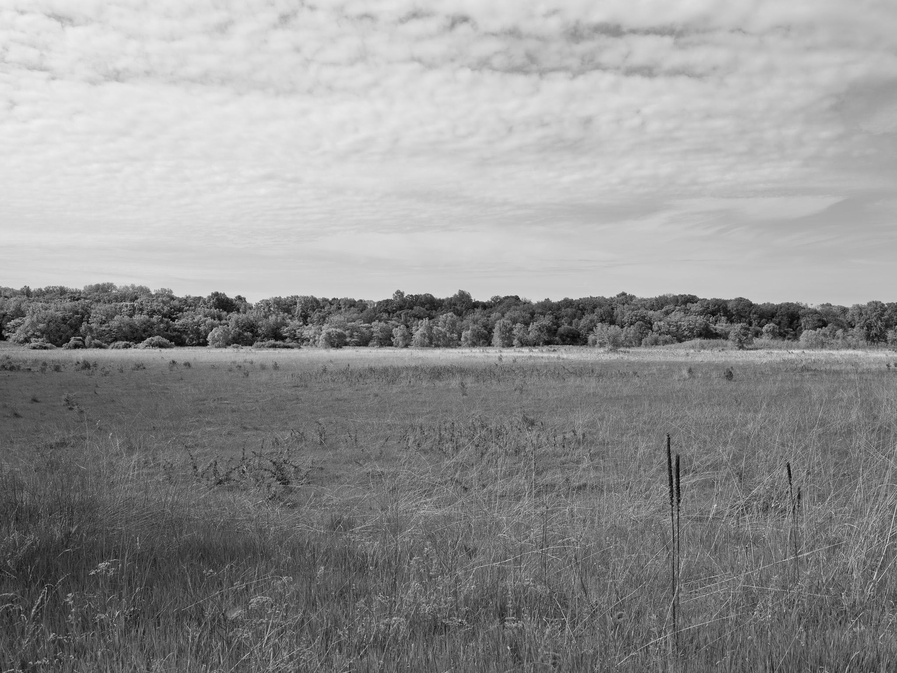
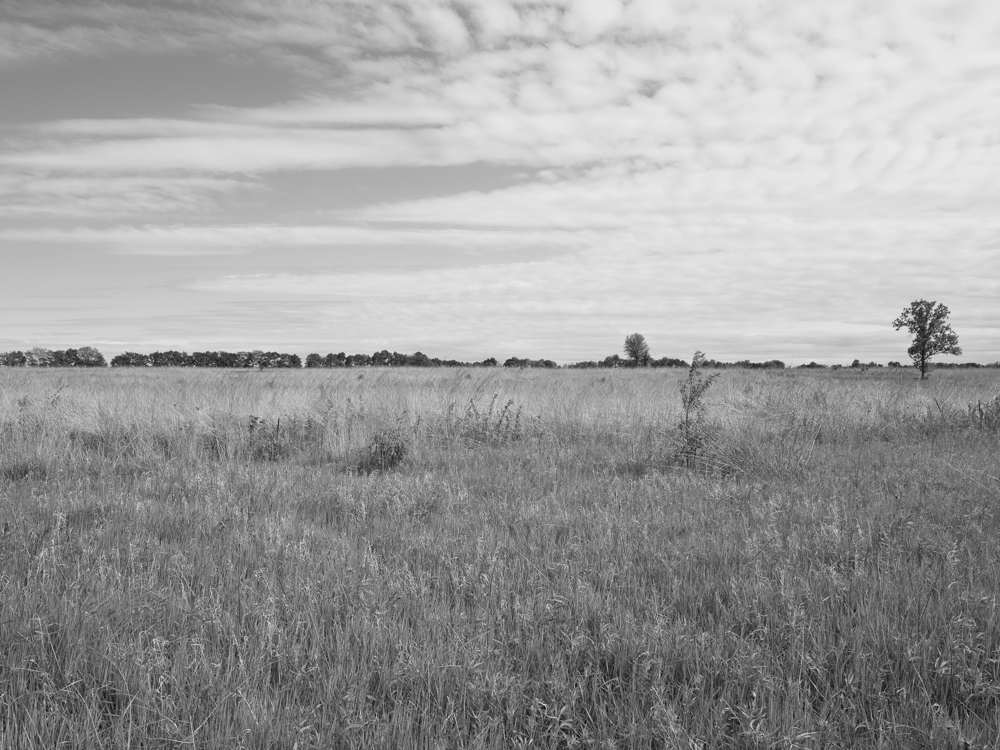
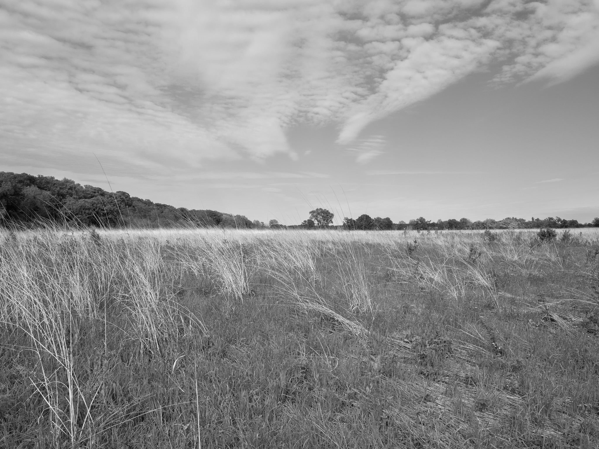
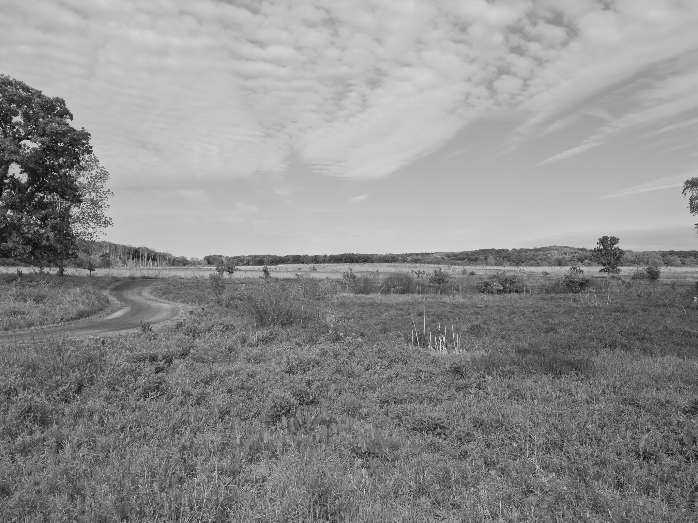
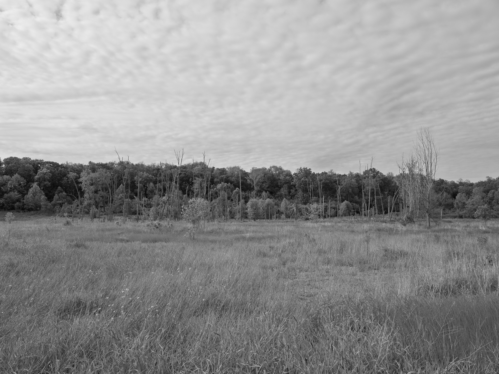
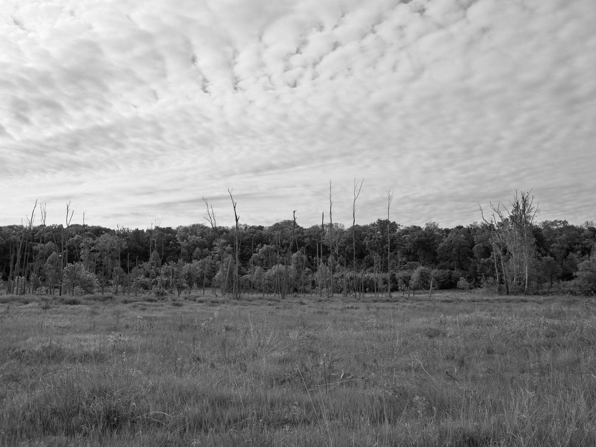
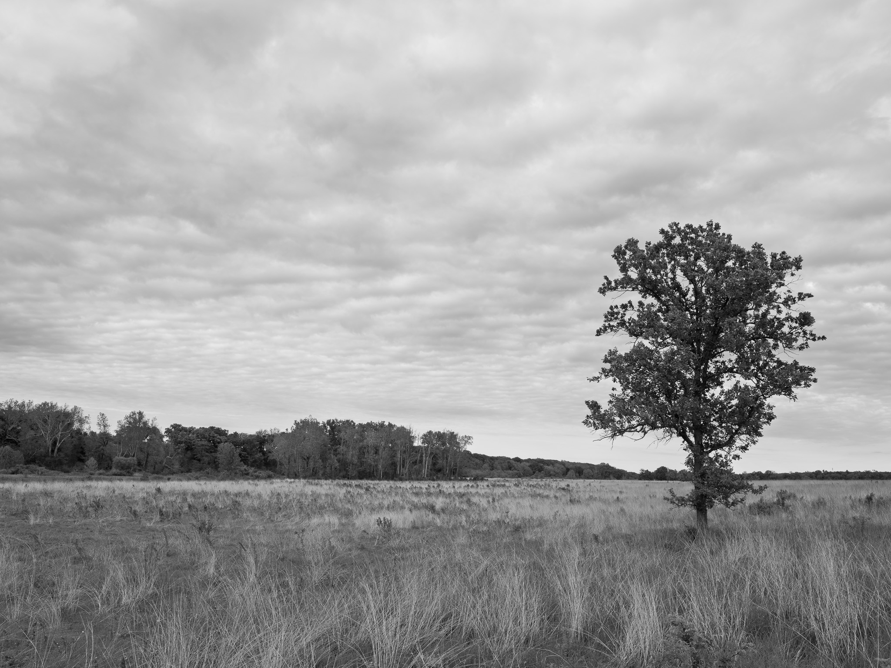

Public Lands Institute
Map
Archive
About
Prophetstown State Park
IN

Prophetstown State Park 1 · 2026-05-21
_DSF2330.jpg

Prophetstown State Park 2 · 2026-05-21
_DSF2353.jpg

Prophetstown State Park 3 · 2026-05-21
_DSF2370.jpg

Prophetstown State Park 4 · 2026-05-21
_DSF2375.jpg

Prophetstown State Park 5 · 2026-05-21
_DSF2387.jpg

Prophetstown State Park 6 · 2026-05-21
_DSF2390.jpg

Prophetstown State Park 7 · 2026-05-21
_DSF2406.jpg
View all 7 images →
← Pine Hills Nature Preserve
Shades State Park →